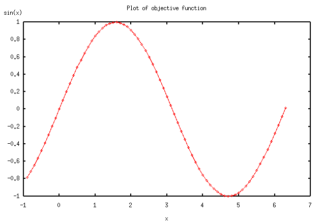
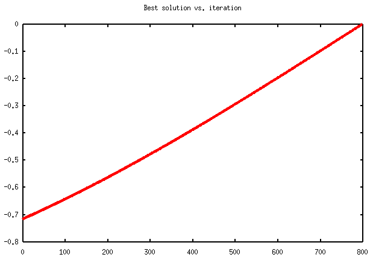
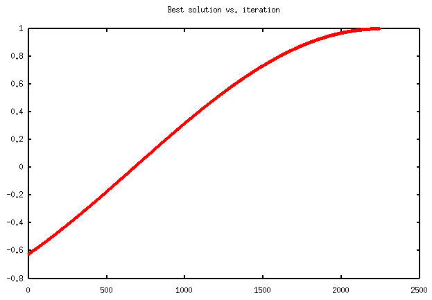
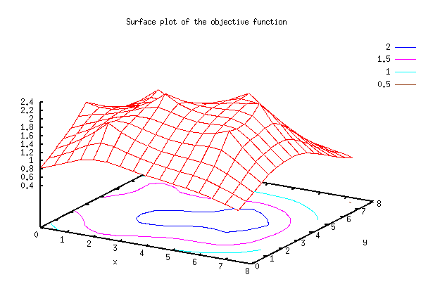
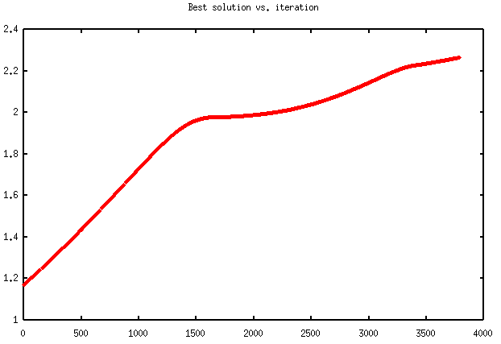
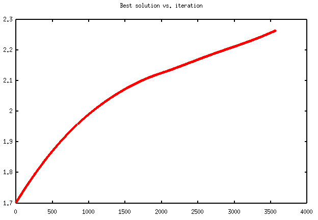

[Last updated on: Thursday, March 04, 2009]
The SimpleOpt algorithm.
Its application to general purpose optimization problems
Copyright © 2003, by Dan Mugurel Ontanu & Mihnea Horia Vrejoiu
1. Introduction
2. A simple example
3. The
general framework for using the optimizer on user defined
problems
4. An
example of using the general framework for a 2-D
function
5. Conclusions
DOWNLOAD
ABSTRACTA simple, general purpose optimization tool has been designed and developed under the Python language. The purpose of this document is to describe some practical ways of using this tool from within other Python applications. The introduction (section 1) presents an overview of the category of problems the optimizer is intended for. For making things as attractive and easy understandable as possible, a simple example for the use of the optimizer on a 1-D sine function is provided first (in section 2). Starting from this example, a general framework which can be used as a starting Python script skeleton for other user defined functions is then presented (section 3). Finally, a more complex example, of using the optimizer on a highly customizable 2-D function, using the above framework, is discussed (section 4). This document ends with some conclusions (section 5) and a list of available downloads.
The optimizer is intended to solve the general category of problems, which we shall try to briefly describe in the following.
Suppose that we have an objective function (F), defined on a subset (S) of the real Euclidean n-dimensional space:
F : S --> R, where S is a subset of Rn.
The subset S, is defined as a n-dimensional interval (a "hyper box"):
S = [x0 min, x0 max] × ... × [xi min, xi max] × ... × [xn-1 min, xn-1 max],
with xi min, xi max in R.
We have to optimize this function. This means that we should find (ideally) all the points X*, for which the function F has local maxima:
F(X*) = max,
and satisfying some constraints, given by a set of relations in the form of:
Gj(X*) <= 0, where j = 0 ... m - 1, X* in S.
In conclusion, the optimization problem we have to deal with, could be defined by the triplet: space, function, constraints <S, F, G>. In this approach, each of the above elements is procedurally defined. This is an alternative to the symbolic approach, used by other optimization algorithms (such as CONOPT).
The algorithm consists in a simple incremental maximum search procedure in the problem space S (restricted by the constraints Gj), using "flexible" point neighborhoods. It is implemented in Python in the form of two modules named problem.py and simpleopt.py. The detailed implementation of the optimization algorithm is not subject of this document.
Let's first consider that we want to write a Python application which can
solve the concrete 1-D optimization problem of a sine function:
F = sin(x),
defined on:
S = [-0.9, 2pi + 0.1].
A graph of this function is represented in figure 2.1.

Figure 2.1
We want to optimize this function, restraining only to the [0.5, 2pi] interval. This can be expressed by considering the following system of two constraints:
G0(x) = 0.5 – x < 0, and G1(x) = x - 2pi < 0.
How can we express this simple optimization problem, using the Python language?
The problem space S, could be specified by a list of tuples (pairs), each containing the bounds (i.e. a minimum value, and a maximum one) for each coordinate. In our case, n = 1, so our list, let's name it mybounds, contains only one tuple:
mybounds = [ (-0.9, 2*math.pi + 0.1) ].
The objective function F, let's name it myeval(x), could be defined like this:
def myeval(x): return math.sin(x[0]).
Please note that the formal parameter x must be a list of coordinates x[0], …, x[i], …, x[n-1]. This is why we used the notation x[0] instead of x, for our 1-D example.
The two constraints G0 and G1 could be specified as only one function, myconstraint(i, x), like in the following:
def myconstraint(i,
x):
# This defines [0.5, 2pi] as
the allowed interval
if
i == 0: # constraint no.
1
if x[0]
> 0.5: return
-1
else:
return 1
elif i ==
1: # constraint no.
2
if x[0]
< 2*math.pi: return
-1
else:
return 1
else: return
1 # any other constraint...
where i indicates the constraint which should be evaluated for the current point x.
Well, things look quite simple until now. It's time to see how the above definitions could be integrated in a working Python module which uses the optimization algorithm implemented in the problem.py and simpleopt.py modules.
The Python program will look like this:
from problem import Problem
from
simpleopt import SimpleOpt
import math
# ------------------------------------------------------------------
mybounds = [ (-0.9, 2*math.pi + 0.1) ]
def myeval(x): return math.sin(x[0])
def myconstraint(i, x):
# This defines [0.5, 2pi] as the allowed interval
if i ==
0: # constraint nr.
1
if x[0] > 0.5: return
-1
else: return
1
elif i == 1: #
constraint nr. 2
if x[0] <
2*math.pi: return -1
else: return
1
else: return 1 # any other
constraint...
#
-------------------------------------------------------------------
# Program
starting point
#
-------------------------------------------------------------------
if __name__ == "__main__":
myproblem =
Problem("func1d", 1, 2,
mybounds, myeval, myconstraint)
so = SimpleOpt(myproblem,
100000, 0.001, 5, 0, 0)
so.optsearch()
#
-------------------------------------------------------------------
#
-------------------------------------------------------------------
Let's explain a little bit more the executable part of the above
program.
By calling the class Problem, defined in the problem.py module, the variable myproblem gets an instance of the current optimization problem, defined by: the dimension of the input space (1), the number of constraints (2), the list of bounds (mybounds), the objective function (myeval), and the set of constraints (myconstraint).
By calling the SimpleOpt class, defined in the simpleopt.py module, the variable so gets an instance of the optimizer ready to be applied to our problem (myproblem), and using a maximum number of steps / iterations for the search process (100000), a minimum search step size (0.001), and the option of non-plotting any graphs (0).
The SimpleOpt's class method optsearch starts the searching process for a local maximum.
If the search process succeeds, the maximum value of the objective function, and the point in which it was found, are displayed.
REMARK:
Each run of the optsearch method eventually finds a single local maximum. In order to find all of them, the process should be re-run a number of times. Obviously, this number depends on the topology of the (hyper-)surface representing the graph of the objective function over the problem space. As it is now, the algorithm doesn't guarantee that for each new run, a different maximum will be found. This implies that even if you found the same maximum for a number of successive trials, this doesn't mean that there are no other maxima to be still found. To be somehow sure that (almost) all the maxima have been found, several trials could be necessary for certain objective functions.
In order to run yourself the above Python code, you
can:
- either copy and paste the script from this page in
a file (e.g. func1d.py),
- or, download the
func1d.py script directly from here,
and then use the
command:
python func1d.py
Obviously, you should also have the optimizer modules already on your computer. If not, you can download them now (simpleopt.py, problem.py).
REMARK:
When running the above program, if the numeric.py and gnuplot.py modules, and the Gnuplot utility for your operating system, are installed on your computer, the optsearch method also provides a graph representing the evolution of the objective function during the search of a local maximum. Such graphs are represented in Figure 2.2, and 2.3 (and also further in section 4). In each of them, "best solution" at iteration k, means the value of the function for the point considered at step k. The graph always represents an increasing curve. This happens because the search algorithm tries to find points for which the value of the objective function is greater than for the current one, at each step / iteration. The curve depends on the starting search point, and ends either when a real local maximum is found, or the allowed number of steps / iterations is reached, or the domain limit is overridden.

Figure 2.2

Figure 2.3
The graphs in Figures 2.2 and 2.3, are obtained for two different runs of the program. The first describes a 800 steps process, through which a boundary maximum of value 0 is found in 2pi. The second one, shows a 2250 iterations process, which found the real maximum of the sine function in pi/2.
3.
The general framework for using the optimizer on user defined
problems
Having in mind the above simple example (section 2), we can try to define
now a general framework for using the optimizer on user defined problems. Such a
framework should contain the following parts:
The Python-like code implementing these ideas is shown bellow. Please note, that it doesn't really represent a directly executable script as it is. The portions written between '<' and '>' characters should be replaced by the appropriate Python data / function(s), to customize the code according to your application.
#
-------------------------------------------------------------------
#
Mandatory imports:
# - problem definition
class
# - simple, general-purpose optimizer
class
#
-------------------------------------------------------------------
from problem import Problem
from simpleopt
import SimpleOpt
#
-------------------------------------------------------------------
#
Auxiliary imports
#
-------------------------------------------------------------------
import math
import
Numeric # needed only for
plotting purposes
import
Gnuplot # needed only for
plotting purposes
#
-------------------------------------------------------------------
#
Auxiliary data and function definitions
#
-------------------------------------------------------------------
#
-------------------------------------------------------------------
#
Specification of the problem space:
# list of bounds on each coordinate, as a
tuple (xmin, xmax)
#
-------------------------------------------------------------------
mybounds = < list_of_binary_tuples >
#
-------------------------------------------------------------------
#
Procedural definition of the objective function f
#
-------------------------------------------------------------------
def myeval(x):
<
objective_function_statements >
#
-------------------------------------------------------------------
#
Procedural definition of the set of constraints gi
#
-------------------------------------------------------------------
# NOTE:
Each i personalizes a constraint function gi. For a given i
# (that is, a
given constraint, myconstraint(i, x) must return a
# value < 0 if the
constraint is satisfied, and > 0 if not
#
-------------------------------------------------------------------
def myconstraint(i, x):
if i == 0: # constraint nr.
1
< constraint_1_statements
>
elif i == 1: #
constraint nr. 2
<
constraint_2_statements >
elif i ==
2: # constraint nr.
3
< constraint_3_statements
>
...
else: return
1 # any other constraint...
#
-------------------------------------------------------------------
# Program
starting point
#
-------------------------------------------------------------------
if __name__ == "__main__":
# Here can be drawn a graph of the objective function
< appropriate_statements >
# Specify your
optimization problem here, getting an instance of
# it.
Parameters:
# - problem name
# - dimension of the
input space
# - number of
constraints
# - list of
bounds
# - objective
function
# - constraints
function
# - desired starting point reference
(optional list of coordinates)
myproblem = Problem(<
problem_name >,
<
dimension_of_problem_space
>,
< number_of_constraints
>,
mybounds,
myeval,
myconstraint,
seedpoint = < value >)
# Create a personalized
instance of the optimizer, by specifying:
# - the problem
# - maximum number of steps / iterations for the search
process
# - minimum search step
size (the search process resolution)
# - maximum search depth (1 - 500)
# - whether to use backtracking (1), or not
(0)
# - whether to use graphics
(1), or not (0)
so =
SimpleOpt(myproblem,
< number_of_steps
>,
< minimum_search_step_size
>,
< maximum_search_depth >,
< option_to_use_or_not_backtracking
>,
< option_to_plot_or_not_graphs >)
# Start the optimizer
so.optsearch()
#
-------------------------------------------------------------------
#
-------------------------------------------------------------------
REMARKS:
Please note that the parameters of the simpleopt method, referred above as number_of_steps and minimum_step_size, must be chosen according to the concrete
problem. They should also be correlated to each other (lesser minimum_step_size requires greater number_of_steps).
The maximum_search_depth parameter could be
considered as a measure of the "stubbornness" with which the algorithm
tries to find a possible new optimum around the current candidate. Smaller
values should be used for problems having relatively smooth objective function,
while larger ones are indicated for problems with "spiky" objective
function (including the linear programming type ones).
The problem_name parameter is used only
for identifying a log file (with the extension .log) which is generated while
running the problem associated SimpleOpt instance, and storing most of the
information displayed on the screen during this process.
4. An
example of using the general framework for a 2-D function
Based on the framework described in section 3, we present a more
complex example, of a 2-D objective function optimization. We consider a real
function F, defined on the square [0, 8] × [0, 8], in the form of a sum of
exponentials:
k
F(X) = Sum fi(X)
i=1
where,
d(Pi, X)
fi(X) = bi exp( -
------------- )).
ai
Each exponential fi is centered on a point Pi, has an amplitude bi, and a "form factor" given by the parameter ai. It depends on the current point X = (x0, x1), by means of the Euclidean distance d, between the center Pi and X. Each exponential fi determines a maximum of the objective function F in each point Pi. For the example presented here, we defined a function F, composed of 7 exponentials fi, and thus having 7 maxima. All exponentials have the same amplitude (bi = 1) and "form factor" (ai = 2)
A graph of the above described objective function is depicted in Figure 4.1.

Figure 4.1
Let's consider that the optimization problem we want to solve is subject to a single constraint, representing a circular domain of radius 3, centered in [4, 4].
The Python code which attempts to solve this problem is shown bellow.
#
-------------------------------------------------------------------
#
Mandatory imports:
# - problem definition
class
# - simple, general-purpose optimizer
class
#
-------------------------------------------------------------------
from problem import Problem
from simpleopt
import SimpleOpt
#
-------------------------------------------------------------------
#
Auxiliary imports
#
-------------------------------------------------------------------
import math
#import Numeric # needed for
plotting purposes
#import Gnuplot # needed for plotting purposes
#
-------------------------------------------------------------------
#
Auxiliary data and function definitions
#
-------------------------------------------------------------------
p = [(1, 6), (0, 3), (2, 1), (3, 3), (5, 5),
(6, 4), (6, 2)]
alfa = [2, 2, 2, 2, 2, 2, 2]
beta = [1, 1, 1, 1, 1, 1,
1]
center = (4, 4)
radius = 3
def dist(x, y):
return
math.sqrt((x[0] - y[0])*(x[0] - y[0])
+
(x[1] - y[1])*(x[1] - y[1]))
def hump(i, x):
return
beta[i] * math.exp(-dist(p[i], x) / alfa[i])
#
-------------------------------------------------------------------
#
Specification of the problem space:
# list of bounds on each coordinate, in
the form (xmin, xmax)
#
-------------------------------------------------------------------
mybounds = [(0, 8), (0, 8)]
#
-------------------------------------------------------------------
#
Procedural definition of the objective function f
#
-------------------------------------------------------------------
def myeval(x):
sum =
0
for i in range(len(p)): sum += hump(i,
x)
return sum
#
-------------------------------------------------------------------
#
Procedural definition of the set of constraints gi
#
-------------------------------------------------------------------
# NOTE:
Each i personalizes a constraint function gi. For a given i
# (that is, a
given constraint, myconstraint(i, x) must return a
# value <= 0 if the
constraint is satisfied, and > 0 if not
#
-------------------------------------------------------------------
def myconstraint(i, x):
if i == 0: #
constraint nr. 1
return dist(x,
center) - radius
else:
return
1 # any other
constraint...
#
-------------------------------------------------------------------
# Program
starting point
#
-------------------------------------------------------------------
if __name__ == "__main__":
# Here can be drawn a
graph of the objective function
# < ... (insert
appropriate code) ... >
# Specify your
optimization problem here, getting an instance of
# it.
Parameters:
# - problem name
# - dimension of the
input space
# - number of
constraints
# - list of
bounds
# - objective
function
# - constraints
function
# - desired starting point reference
(optional list of coordinates)
myproblem = Problem("func2d", 2, 1, mybounds, myeval, myconstraint)
# Create a personalized
instance of the optimizer, by specifying:
# - the problem
# - maximum number of steps for the search
process
# - minimum search step
size (the search process resolution)
# - maximum search depth (1 - 500)
# - whether to use backtracking (1), or not
(0)
# - whether to use graphics
(1), or not (0)
so = SimpleOpt(myproblem, 100000, 0.001, 5, 0, 0)
# Start the optimizer
so.optsearch()
#
-------------------------------------------------------------------
#
-------------------------------------------------------------------
In order to run yourself the above Python code, you
can:
- either copy and paste the script from this page in
a file (e.g. func2d.py),
- or, download the
func2d.py script directly from here,
and then use the
command:
python func2d.py
Obviously, you should also have the optimizer modules already on your computer. If not, you can download them now (simpleopt.py, problem.py).
Please remember that on one run, only one maximum is found. To find all of them, several trials should be considered.
Figures 4.2 and 4.3 present the evolution of the searching process at each step, for two different runs.

Figure 4.2

Figure 4.3
REMARK:
The above example could be considered as a good test environment for the optimizer capabilities. The function F could be dramatically modified, by appropriately choosing the number of points Pi, the amplitudes bi, the "form factors" ai, and by defining different constraint regions. Perhaps, a good starting point for tests could be to change the radius of the constraint region, and / or the amplitudes of the exponentials.
A simple, general purpose optimization tool has been designed and developed under the Python language. This document described some practical ways of using this tool from within other Python applications. A simple 1-D example, of a sine objective function optimization program was presented and commented first. Starting from this easy to understand example, a general structure for Python applications which use the optimizer has been sketched then. Finally, a more complex program example, built on the above general structure, intended to optimize a 2-D objective function was presented. This last example could be the base for a lot of experiments, the proposed objective function being entirely customizable by its parameters. Thus, the strengths and limitations of the optimizer can be revealed. Using the general framework presented in section 3, one can even experiment the behavior of the optimizer on various real world problems.
| simpleopt.py |
the Python code for the optimizer |
| problem.py |
the Python code for the problem specification |
| func1d.py |
the Python code to call the optimizer for a sine function (1-D example) |
| func2d.py |
the Python code to call the optimizer for a sum of exponentials function (2-D example) |
| simpleopt.zip |
the "zip" archive containing all the SimpleOpt Python modules (including all examples) |